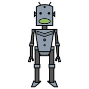

Gioco · con la Biblioteca di Castelcovati
libro
o AI?
Frase 1 di 8 · Libro o AI?
 libro
libro
robot«C'era una volta un bottone. – Di una giacca da re! – diranno subito i miei piccoli lettori. No, ragazzi, avete sbagliato: era il bottone di una giacchetta qualunque, e non voleva saperne di restarci attaccato.»
Scopri la risposta
AI
Imita Carlo Collodi, Le avventure di Pinocchio
L'originale: «C'era una volta… – Un re! – diranno subito i miei piccoli lettori. No, ragazzi, avete sbagliato. C'era una volta un pezzo di legno.»